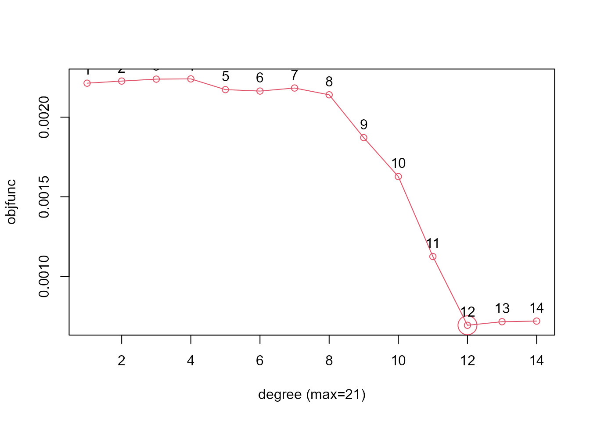
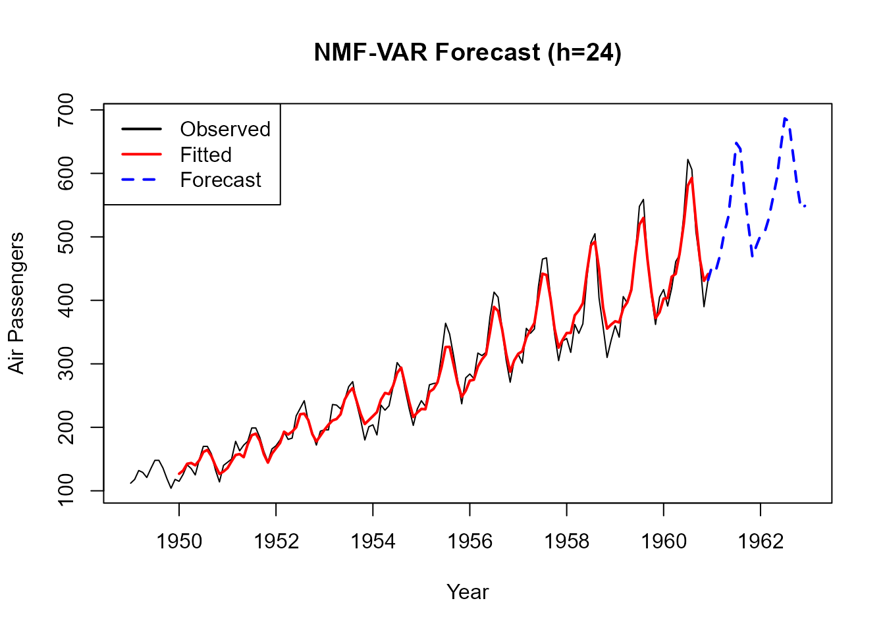
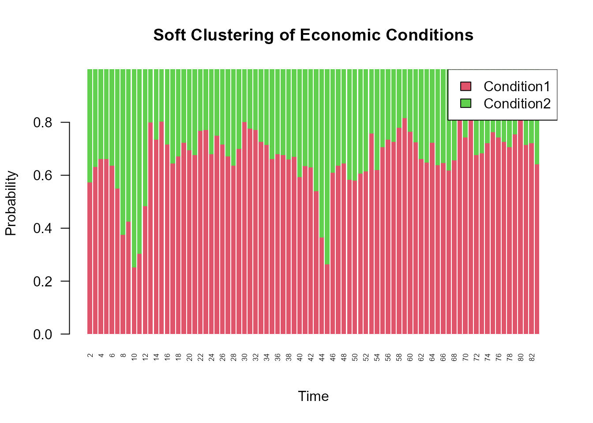

Time Series Analysis with NMF-VAR
Source:vignettes/timeseries-with-nmfkc.Rmd
timeseries-with-nmfkc.RmdIntroduction
This vignette demonstrates how to apply the nmfkc
package to time series data using the NMF-VAR (Non-negative
Matrix Factorization - Vector Autoregression) framework. This
approach models the coefficient matrix of NMF as a VAR process
(),
allowing for both dimensionality reduction and temporal modeling.
Key functions in nmfkc such as nmfkc.ar and
nmfkc.ar.degree.cv directly support R’s native
ts objects, preserving time series
properties automatically.
We will cover two scenarios:
-
Univariate AR: Forecasting airline passengers
(
AirPassengers). -
Multivariate VAR: Analyzing macroeconomic
indicators (
Canada).
First, let’s load the necessary packages.
library(nmfkc)
#> Package: nmfkc (Version 0.5.8 , released on 20 12 2025 )
#> https://ksatohds.github.io/nmfkc/
library(vars) # For Canada dataset
#> Warning: package 'vars' was built under R version 4.4.3
#> Loading required package: MASS
#> Loading required package: strucchange
#> Warning: package 'strucchange' was built under R version 4.4.2
#> Loading required package: zoo
#> Warning: package 'zoo' was built under R version 4.4.3
#>
#> Attaching package: 'zoo'
#> The following objects are masked from 'package:base':
#>
#> as.Date, as.Date.numeric
#> Loading required package: sandwich
#> Warning: package 'sandwich' was built under R version 4.4.2
#> Loading required package: urca
#> Warning: package 'urca' was built under R version 4.4.3
#> Loading required package: lmtest
#> Warning: package 'lmtest' was built under R version 4.4.2Example 1: Univariate Autoregression with AirPassengers
The AirPassengers dataset contains monthly international
airline passenger numbers. We will model this univariate time series
using an autoregressive (AR) model.
1. Data Preparation
We simply log-transform the ts object to stabilize
variance. We do not need to manually convert it to a
matrix or create time vectors; nmfkc functions handle
ts objects directly.
# Load and transform the ts object
d_air <- AirPassengers
d_air_log <- log10(d_air) # Still a ts object2. Model Selection (Lag Order)
We use Cross-Validation to find the optimal degree
(lag order). By passing the ts object
d_air_log, the function automatically handles the time
dimension.
# Evaluate lag orders from 1 to 14
# Note: ts objects are automatically transposed to (Variables x Time) internally
cv_res <- nmfkc.ar.degree.cv(d_air_log, rank = 1, degree = 1:14, epsilon=1e-6, maxit=500000)
#> degree=1...0.2sec
#> degree=2...0.7sec
#> degree=3...0.7sec
#> degree=4...0.7sec
#> degree=5...0.8sec
#> degree=6...0.8sec
#> degree=7...0.8sec
#> degree=8...0.8sec
#> degree=9...1sec
#> degree=10...0.9sec
#> degree=11...0.9sec
#> degree=12...0.9sec
#> degree=13...1sec
#> degree=14...1sec
# Check the optimal degree
cv_res$degree
#> [1] 12
# For this example, we will proceed with D=12 (capturing monthly seasonality)
D <- 123. Model Fitting
We construct the observation matrix Y and covariate
matrix A (lagged Y) using nmfkc.ar(). The
returned matrices Y and A will have time-based
column names derived from the ts object.
# Create matrices for the AR(12) model
a_air <- nmfkc.ar(d_air_log, degree = D, intercept = TRUE)
# Fit the NMF-AR model (Rank=1 for univariate)
res_air <- nmfkc(Y = a_air$Y, A = a_air$A, rank = 1, epsilon = 1e-6, maxit=500000)
#> Y(1,132)~X(1,1)C(1,13)A(13,132)=XB(1,132)...0.2sec
# Check goodness of fit
res_air$r.squared
#> [1] 0.9798257
# Check for stationarity (spectral radius < 1)
nmfkc.ar.stationarity(res_air)
#> $spectral.radius
#> [1] 0.9983758
#>
#> $stationary
#> [1] TRUE4. Forecasting
We can forecast future values using the fitted model.
nmfkc.ar.predict uses the time properties stored in the
model to generate the correct future time sequence.
# Forecast next 2 years (24 months)
h <- 24
pred_res <- nmfkc.ar.predict(x = res_air, Y = a_air$Y, n.ahead = h)
# Convert predictions back to original scale
pred_val <- 10^as.vector(pred_res$pred)
pred_time <- pred_res$time # Future time points generated by the function
# --- Plotting ---
# Setup plot range
xlim_range <- range(c(time(d_air), pred_time))
ylim_range <- range(c(d_air, pred_val))
# 1. Observed data (Black)
plot(d_air, type = "l", col = "black",
xlim = xlim_range, ylim = ylim_range, lwd = 1,
xlab = "Year", ylab = "Air Passengers", main = "NMF-VAR Forecast (h=24)")
# 2. Fitted values during training (Red)
# a_air$Y has column names as time strings; we parse them for plotting
fitted_time <- as.numeric(colnames(res_air$XB))
lines(fitted_time, 10^as.vector(res_air$XB), col = "red", lwd = 2)
# 3. Forecast (Blue)
# Connect the last observed point to the first forecast for a continuous line
last_t <- tail(as.numeric(time(d_air)), 1)
last_y <- tail(as.vector(d_air), 1)
lines(c(last_t, pred_time), c(last_y, pred_val), col = "blue", lwd = 2, lty = 2)
# Add legend
legend("topleft", legend = c("Observed", "Fitted", "Forecast"),
col = c("black", "red", "blue"), lty = c(1, 1, 2), lwd = 2)
Example 2: Vector Autoregression with Canada Dataset
The Canada dataset contains four quarterly macroeconomic
variables. We’ll use a multivariate NMF-VAR model to analyze the
relationship between these variables.
1. Data Preparation
We take the first difference to achieve stationarity, normalize the
data to
,
and transpose it to the Variables x Time format required by
NMF.
# Load, difference, and normalize
d0_canada <- Canada
dd_canada <- apply(d0_canada, 2, diff) # Returns a matrix (Time x Vars)
dn_canada <- nmfkc.normalize(dd_canada)
# Transpose to (Variables x Time) for NMF
Y0_canada <- t(dn_canada)
# Create matrices for VAR(1)
a_canada <- nmfkc.ar(Y0_canada, degree = 1, intercept = TRUE)2. Model Fitting
We fit a model with rank = 2 to identify two latent
economic conditions driving the four variables.
# Fit the NMF-VAR model
res_canada <- nmfkc(Y = a_canada$Y, A = a_canada$A, rank = 2, prefix = "Condition", epsilon = 1e-6)
#> Y(4,82)~X(4,2)C(2,5)A(5,82)=XB(2,82)...0sec
# R-squared and Stationarity
res_canada$r.squared
#> [1] 0.5994663
nmfkc.ar.stationarity(res_canada)
#> $spectral.radius
#> [1] 0.7781102
#>
#> $stationary
#> [1] TRUE3. Latent Structure & Causal Graph
We can visualize how the two latent conditions change over time.
# Visualize soft clustering of time trends
barplot(res_canada$B.prob, col = c(2, 3), border = NA,
main = "Soft Clustering of Economic Conditions",
xlab = "Time", ylab = "Probability",
names.arg = colnames(a_canada$Y), las=2, cex.names = 0.5)
legend("topright", legend = colnames(res_canada$X), fill = c(2, 3), bg = "white")
Finally, we can generate a DOT script to visualize the Granger causality (relationships) between variables inferred by the model.
# Generate DOT script for graph visualization
dot_script <- nmfkc.ar.DOT(res_canada, intercept = TRUE, threshold=0.01)
# Visualize the graph using DiagrammeR
if (requireNamespace("DiagrammeR", quietly = TRUE)) {
DiagrammeR::grViz(dot_script)
} else {
message("Please install 'DiagrammeR' to visualize the graph.")
cat(substr(dot_script, 1, 300), "...\n(truncated)")
}